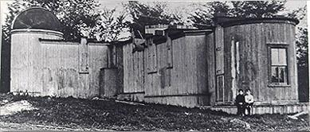
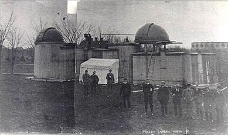

The "Goldwin Smith" Observatory
From Hewitt. Cornell: A History, 1905, p 342:
"Professor Fuertes had advocated for many years the erection of an astronomical observatory. He possessed several telescopes which were purchased by the university, and which were installed in a wooden building which stood on the site of the north wing of the Goldwin Smith Hall. Later it was removed to the site of Stimson Hall. The building had many practical conveniences, owing to the skill and enthusiasm of the professor who planned it. It, however, was imcomplete, and was itself a standing reproach to the campus."
Some pictures of the observatory near Goldwin Smith:
(from the Cornell Archives)


These historical pages were made by the Cornell Astronomical Society, 2000.